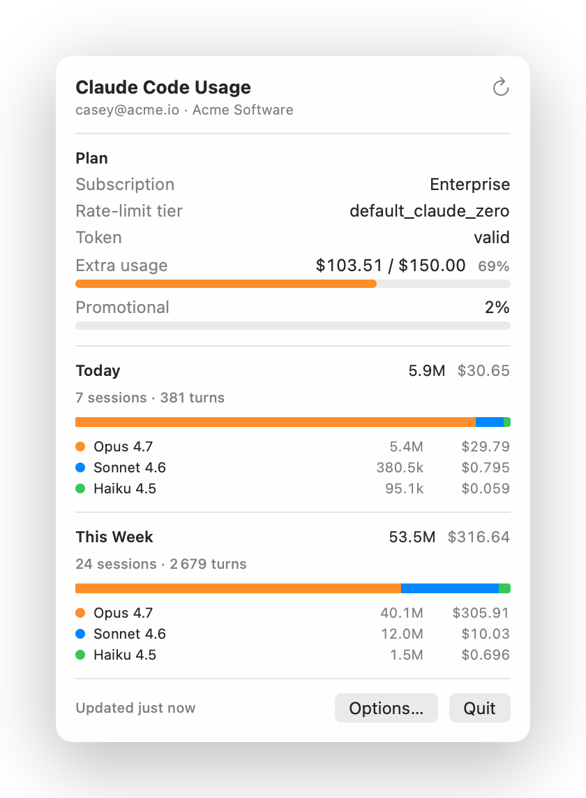
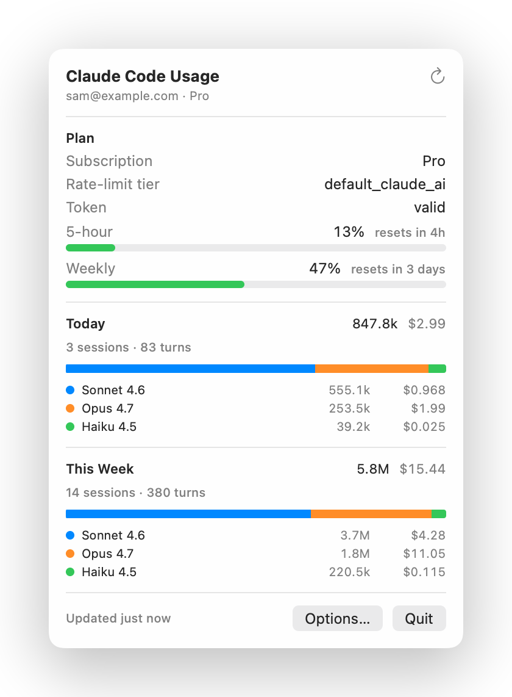
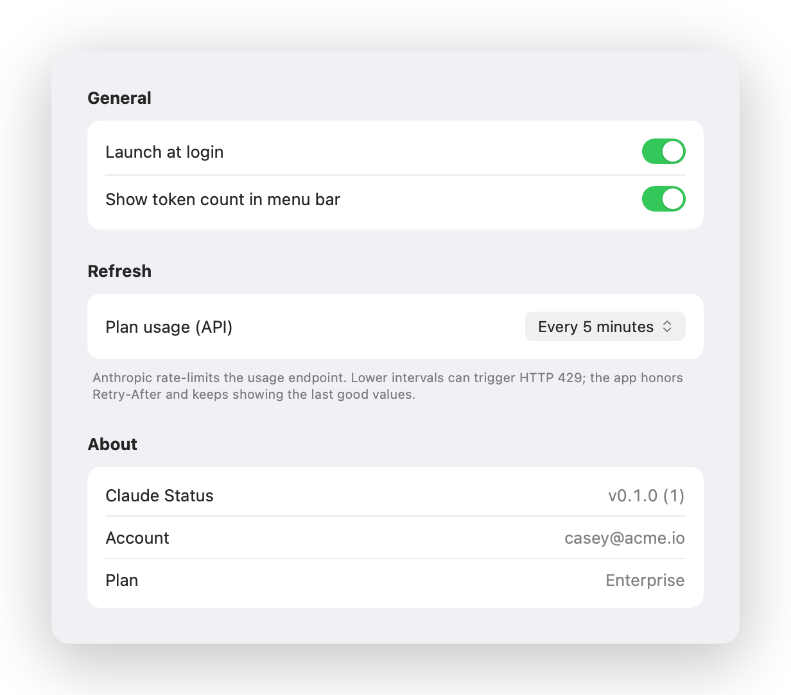

Reuses your Claude Code login
Reads the OAuth token from the Claude Code-credentials Keychain entry. No new accounts, no API keys, no setup forms.
Live plan limits, today's spend, weekly cap, and per-model breakdown — pulled from your existing Claude Code login. Glance, never guess.


Why
Claude Code logs everything locally; Anthropic exposes per-plan usage via an OAuth endpoint. Claude Status stitches both together in a tiny native menu bar item.
Reads the OAuth token from the Claude Code-credentials Keychain entry. No new accounts, no API keys, no setup forms.
Extra Usage in USD for Enterprise. Five-hour + weekly buckets for Pro & Max. Same numbers as claude.ai/settings/usage.
Stacked-bar charts split Opus, Sonnet, and Haiku spend across today and this week, with API-equivalent USD next to each.
Token counts come from ~/.claude/projects/*.jsonl. The Anthropic API call is opt-in and configurable; pick a refresh rate from 1 min to manual.
Swift + SwiftUI MenuBarExtra. Around 1.5k lines. No Electron, no background daemons, no JavaScript runtime.
Auditable end-to-end. Distributed via a Homebrew cask. Ad-hoc signed today; notarized build coming with an Apple Developer ID.
A closer look
The dropdown adapts to the data your plan exposes. Enterprise users see live $ spend against their monthly cap. Pro and Max users see their 5-hour and weekly utilization.

How it works
Reads the OAuth blob Claude Code wrote to svce="Claude Code-credentials". Picks the freshest entry by expiresAt so a stale older login never wins.
Streams ~/.claude/projects/**/*.jsonl line by line, filters by timestamp window, aggregates input / output / cache-read / cache-write per model.
GET api.anthropic.com/api/oauth/usage with the Bearer token. Honors Retry-After on 429s, keeps the last good value on the screen during backoff.
Get it
$ brew tap bcollard/tap
$ brew install --cask claude-statusPrivacy
No analytics, no telemetry. No third-party SDKs. The binary makes one HTTPS call: api.anthropic.com/api/oauth/usage, the same endpoint Claude Code calls.
Local logs stay local. Session JSONL files are read in-process. We extract token counts; we never read the conversation content beyond "usage": {…} blocks.
Keychain access is explicit. macOS prompts you on first launch to allow access to Claude Code-credentials. You can revoke it anytime via Keychain Access.
API is opt-out. In Options → Refresh, pick Manual only to disable auto-polling entirely. The local-log charts still work.
Source on GitHub. ~1.5k lines of Swift. Read it, audit it, fork it.
FAQ
Yes for all current consumer/business plans: Pro, Max, Team, Enterprise. The dropdown adapts to the fields the API returns — Enterprise gets the Extra Usage row, Pro/Max get five-hour and weekly utilization.
No. Claude Status is free and the source is open. There's no in-app purchase, no subscription, no "pro tier" to unlock.
No. It reads the usage blocks of ~/.claude/projects/*.jsonl for token counts, and the OAuth blob in your Keychain. It never opens the rest of the message content.
No. The API is polled every 5 minutes by default. On 429 Too Many Requests the app backs off, honors any Retry-After header, and shows the last known good numbers in the meantime.
Yes. Options → Refresh → Manual only. The local-log charts (today / this week with per-model breakdown) keep working — only the plan-level rows go quiet.
macOS 14 Sonoma or later. The app uses MenuBarExtra and the new SMAppService launch-at-login API.
Today, yes — the release build is arm64. A universal (arm64 + x86_64) build is planned. Open an issue on GitHub if you need it sooner.
Reading another app's Keychain entry from inside the App Store sandbox would need a shared keychain access group entitlement that only Anthropic can grant. The Homebrew cask path avoids that.
The dropdown shows what a given token mix would cost on the Anthropic API. On a plan, you're not actually billed per token — but the figure is a useful comparison. Rates are public list pricing.